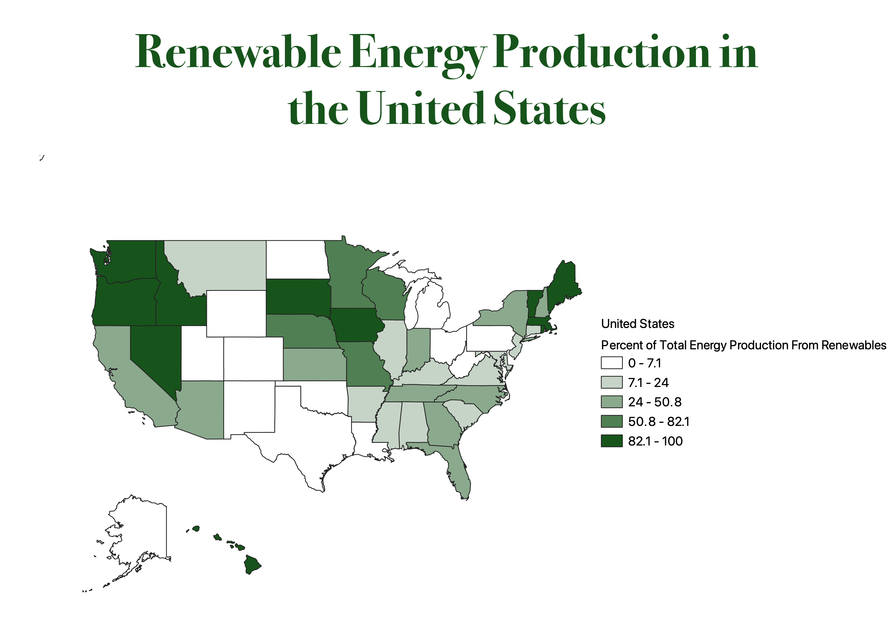

I chose to show renewable energy production by state as a percent of the states total energy production. I was interested in seeing which states were making the transition towards renewable energy but did not was the data to be skewed by state size or population. If I used the raw data on renewable energy production in Btu, then the larger states might show more renwable energy despite it being a tiny percent of their total production. To combat the effects of climate change it is important that this country begins the transition away from fossil fuels and this map shows which states have begun that change.
